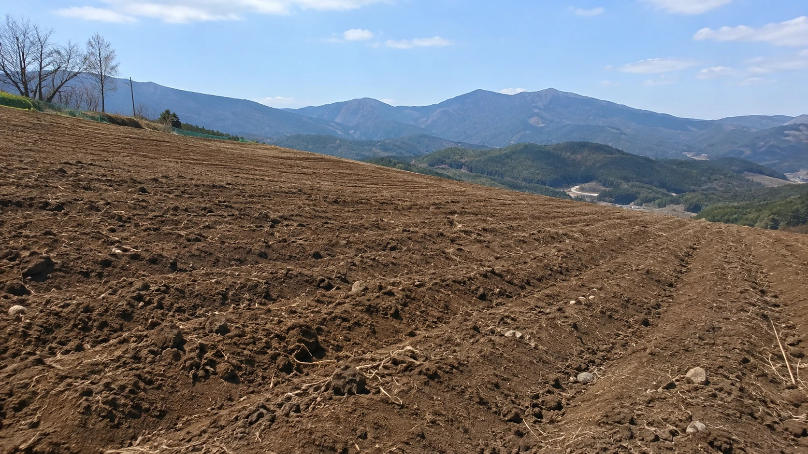
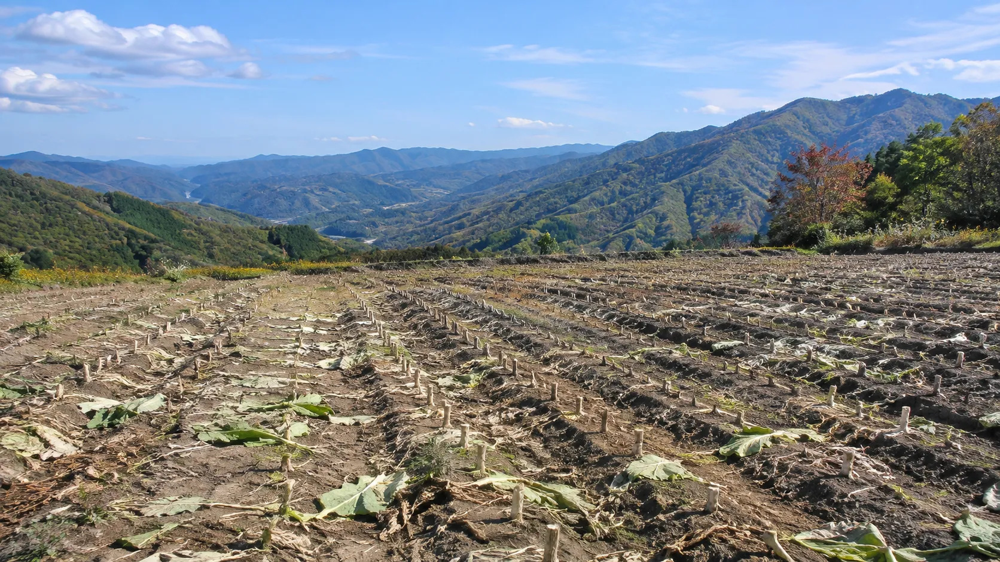
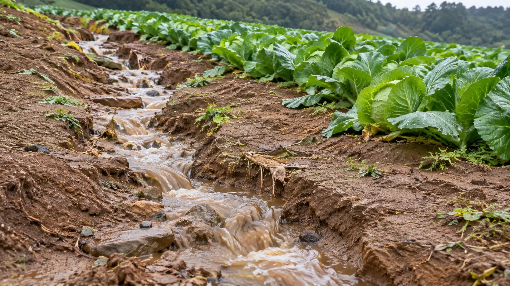

사진 1

01맨흙이 드러난 밭
잔재 피복과 멀칭
수확하고 남은 줄기나 짚, 비닐로
흙 표면을 덮습니다.
흙 표면을 덮습니다.
이 밭에 맞는 피복재인지 먼저 확인합니다.
사진 2

02수확 후 비어 있는 기간
피복작물 재배
다음 작물을 심기 전까지 빈 땅에
작물을 심어 흙을 덮어 둡니다.
작물을 심어 흙을 덮어 둡니다.
지역 여건과 다음 작물 재배에 문제가 없는지 확인합니다.
사진 3

03물이 넓고 얕게 흐르는 밭
완충식생대
밭 가장자리에 풀을 띠처럼 심어
흘러나가는 물과 흙을 붙잡습니다.
흘러나가는 물과 흙을 붙잡습니다.
공간과 작업 동선, 배출구 상태, 물 고임 여부를 확인합니다.
사진 4

04물길이 한곳으로 모이는 밭
식생수로
물이 모이는 길에 풀을 심어
물길이 깊게 파이지 않게 합니다.
물길이 깊게 파이지 않게 합니다.
물이 흐르는 양과 방향 같은 현장 조건을 먼저 확인합니다.